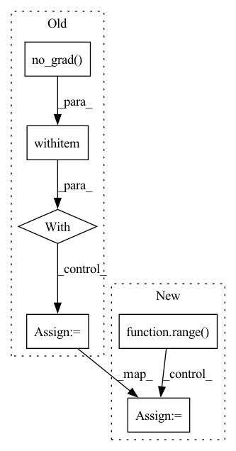

Pattern ID :1088
Before Change
if self.args.feature_based:
pre_pooled_outputs = []
for pre_t in order:
with torch .no_grad():
_,pre_pooled_output = \
self.bert(input_ids=input_ids, token_type_ids=segment_ids, attention_mask=input_mask,t=pre_t,s=smax)
pre_pooled_outputs.append(pre_pooled_output.unsqueeze(1).clone())
pre_pooled_outputs = torch.cat(pre_pooled_outputs, 1)After Change
def self_attention_feature(self,t,input_ids,segment_ids,input_mask,pooled_output):
pre_pooled_outputs = []
for pre_t in [x for x in range( t) ]:
with torch.no_grad():
_,pre_pooled_output = \
self.bert(input_ids=input_ids, token_type_ids=segment_ids, attention_mask=input_mask,t=pre_t,s=self.args.smax)
pre_pooled_outputs.append(pre_pooled_output.unsqueeze(-1).clone())
In pattern: SUPERPATTERN
Frequency: 3
Non-data size: 6
Instances Fragment ID: 5544902
Project Name: zixuanke/pycontinual
Commit Name: 833f2f1e90085a86b7c0788324ed13bd72bed021
Time: 2021-11-12
Author: iscauzixuanke@gmail.com
File Name: src/networks/classification/bert_adapter_mask.py
M Class Name: Net
N Class Name: Net
M Method Name: self_attention_feature(6)
N Method Name: self_attention_feature(9)
M Parent Class: torch.nn.Module
N Parent Class: torch.nn.Module
M File Name: src/networks/classification/bert_adapter_mask.py
N File Name: src/networks/classification/bert_adapter_mask.py
M Start Line: 124
M End Line: 156
N Start Line: 116
N End Line: 130
Before Change
count = torch.zeros_like(self.density_grid)
poses = poses.to(count.device)
with torch .no_grad():
for xi, xs in enumerate(X):
for yi, ys in enumerate(Y):
for zi, zs in enumerate(Z):
lx, ly, lz = len(xs), len(ys), len(zs)
// construct points
xx, yy, zz = custom_meshgrid(xs, ys, zs)
world_xyzs = torch.cat([xx.reshape(-1, 1), yy.reshape(-1, 1), zz.reshape(-1, 1)], dim=-1).unsqueeze(0).to(count.device) // [1, N, 3]
// split batch to avoid OOM
head = 0
while head < B:
tail = min(head + S, B)
After Change
world_xyzs = torch.cat([xx.reshape(-1, 1), yy.reshape(-1, 1), zz.reshape(-1, 1)], dim=-1).unsqueeze(0).to(count.device) // [1, N, 3]
// cascading
for cas in range( self.cascade) :
bound = min(2 ** cas, self.bound)
half_grid_size = bound / resolution
// scale to current cascade"s resolution
cas_world_xyzs = world_xyzs * (bound - half_grid_size)
// split batch to avoid OOM
head = 0
while head < B:
tail = min(head + S, B)
Fragment ID: 5544898
Project Name: ashawkey/torch-ngp
Commit Name: 96af393225fdd443478a79e5b4dd8fe95e4e27b3
Time: 2022-04-08
Author: ashawkey1999@gmail.com
File Name: nerf/renderer.py
M Class Name: NeRFRenderer
N Class Name: NeRFRenderer
M Method Name: mark_untrained_grid(4)
N Method Name: mark_untrained_grid(4)
M Parent Class: nn.Module
N Parent Class: nn.Module
M File Name: nerf/renderer.py
N File Name: nerf/renderer.py
M Start Line: 344
M End Line: 384
N Start Line: 345
N End Line: 390
Before Change
// x_adv, perturb = pgd_attack.perturb(x_real, x_real, c_trg_list[0])
for c_trg in c_trg_list:
with torch .no_grad():
gen_noattack, gen_noattack_feats = self.G(x_real, c_trg)
// Attack
x_adv, perturb = pgd_attack.perturb(x_real, black, c_trg)
// x_adv = x_real + perturbAfter Change
layer_dict = {0: 2, 1: 5, 2: 8, 3: 9, 4: 10, 5: 11, 6: 12, 7: 13, 8: 14, 9: 17, 10: 20, 11: None}
for layer_num_orig in range( 12) :
// Load the trained generator.
self.restore_model(self.test_iters)
// Set data loader.
if self.dataset == "CelebA":
data_loader = self.celeba_loader
elif self.dataset == "RaFD":
data_loader = self.rafd_loader
// Initialize Metrics
l1_error = 0.0
l2_error = 0.0
min_dist = 0.0
l0_error = 0.0
perceptual_error = 0.0
n_samples = 0
// 11 layers + output
// layer_num_orig = 11
print("Layer", layer_num_orig)
for i, (x_real, c_org) in enumerate(data_loader):
// Black image
black = np.zeros((1,3,256,256))
black = torch.FloatTensor(black).to(self.device)
// Prepare input images and target domain labels.
x_real = x_real.to(self.device)
c_trg_list = self.create_labels(c_org, self.c_dim, self.dataset, self.selected_attrs)
layer_num = layer_dict[layer_num_orig]
pgd_attack = attacks.LinfPGDAttack(model=self.G, device=self.device, feat=layer_num)
// Translate images.
x_fake_list = [x_real]
// if i == 0:
// x_adv, perturb = pgd_attack.perturb(x_real, x_real, c_trg_list[0])
for c_trg in c_trg_list:
// Attack
x_adv, perturb = pgd_attack.perturb(x_real, black, c_trg)
// x_adv = x_real + perturb
// x_adv = self.blur_tensor(x_adv)
// Metrics
with torch.no_grad():
// gen, preproc_x = self.G(x_adv, c_trg)
gen, gen_feats = self.G(x_adv, c_trg)
// Add to lists
// x_fake_list.append(preproc_x)
x_fake_list.append(x_adv)
x_fake_list.append(gen)
// No Attack
// gen_noattack, _ = self.G(x_real, c_trg)
gen_noattack, gen_noattack_feats = self.G(x_real, c_trg)
l1_error += F.l1_loss(gen, gen_noattack)
l2_error += F.mse_loss(gen, gen_noattack) Fragment ID: 5544899
Project Name: natanielruiz/disrupting-deepfakes
Commit Name: 572a2bff955b18f76e8ba2cbc181036fed2f7b18
Time: 2019-12-24
Author: nruiz@Nataniels-MacBook-Pro.local
File Name: stargan/solver.py
M Class Name: Solver
N Class Name: Solver
M Method Name: test_attack(1)
N Method Name: test_attack(1)
M Parent Class: object
N Parent Class: object
M File Name: stargan/solver.py
N File Name: stargan/solver.py
M Start Line: 576
M End Line: 655
N Start Line: 660
N End Line: 743